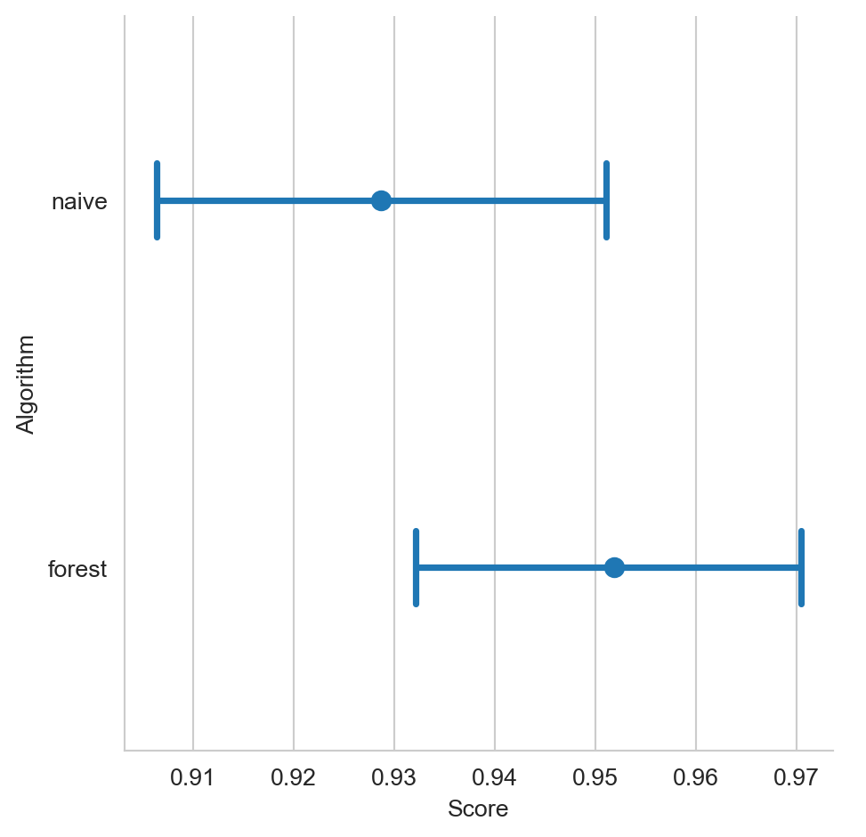

from CompStats import StatisticSamples, CI
from CompStats import performance, plot_performance
from CompStats import difference, plot_difference
from scipy.stats import norm, wilcoxon
from sklearn.datasets import load_iris, load_breast_cancer
from sklearn.naive_bayes import GaussianNB
from sklearn.ensemble import RandomForestClassifier
from sklearn.model_selection import train_test_split, StratifiedKFold
from sklearn.metrics import recall_score
import numpy as np
import seaborn as sns
import pandas as pd13 Comparación de Algoritmos
El objetivo de la unidad es conocer y aplicar diferentes procedimientos estadísticos para comparar y analizar el rendimiento de algoritmos.
13.1 Paquetes usados
13.2 Introducción
Hasta el momento se han descrito diferentes algoritmos de clasificación y regresión; se han presentado diferentes medidas para conocer su rendimiento, pero se ha dejado de lado el conocer la distribución de estas medidas para poder tener mayor información sobre el rendimiento del algoritmo y también poder comparar y seleccionar el algoritmo que tenga las mejores prestaciones ya sea en rendimiento o en complejidad.
13.3 Intervalos de confianza
El análisis del rendimiento se inicia partiendo de que el rendimiento se puede estimar a partir del conjunto de prueba, \(\mathcal G\); el valor obtenido estima el rendimiento real, \(\theta\), el cual se considera una constante. Una manera de conocer el rango de valores donde se puede encontrar \(\theta\) es generando su intervalo de confianza. El intervalo de confianza de \(\theta\) está dado por \(C = (a(\mathcal G), b(\mathcal G)),\) de tal manera que \(P_{\theta}(\theta \in C) \geq 1 - \alpha\). Es importante mencionar que el intervalo no mide la probabilidad de \(\theta\) dado que \(\theta\) es una constante, en su lugar mide de que el valor estimado esté dentro de esos límites con esa probabilidad. Por otro lado se utiliza la notación \(a(\mathcal G)\) y \(b(\mathcal G)\) para hacer explicito que en este caso los límites del intervalo son obtenidos utilizando el conjunto de prueba. Una manera de entender el intervalo de confianza de cualquier parámetro es suponer que si el parámetro se estima \(100\) veces con el mismo procedimiento, en diferentes muestras, un intervalo del 95% de confianza dice que 95 de las veces la estimación del parámetro estará en el intervalo calculado.
13.3.1 Método: Distribución Normal
Existen diferentes procedimientos para generar intervalos de confianza, uno de ellos es asumir que la estimación de \(\theta\), i.e., \(\hat \theta\) se distribuye como una normal, i.e., \(\hat \theta \sim \mathcal N(\mu, \sigma^2),\) donde \(\sigma=\textsf{se}=\sqrt{\mathbb V(\hat \theta)}\) corresponde al error estándar (Sección A.1) de la estimación \(\hat \theta.\) En estas condiciones el intervalo está dado por:
\[ C = (\hat \theta - z_{\frac{\alpha}{2}}\textsf{se}, \hat \theta + z_{\frac{\alpha}{2}}\textsf{se}), \]
donde \(z_{\frac{\alpha}{2}} = \Phi^{-1}(1 - \frac{\alpha}{2})\) y \(\Phi\) es la función de distribución acumulada de una normal.
13.3.2 Ejemplo: Exactitud
Recordado que dado una entrada el clasificador puede acertar la clase a la que pertenece esa entrada, entonces el resultado se puede representar como \(1\) si la respuesta es correcta y \(0\) de lo contrario. En este caso la respuesta es una variable aleatoria con una distribución de Bernoulli. Recordando que la distribución Bernoulli está definida por un parámetro \(p\), estimado como \(\hat p = \frac{1}{N} \sum_{i=1}^N \mathcal X_i\) donde \(\mathcal X_i\) corresponde al resultado del algoritmo en el \(i\)-ésimo ejemplo. La varianza de una distribución Bernoulli es \(p(1-p)\) por lo que el error estándar es: \(se=\sqrt{\frac{p(1-p)}{N}}\) dando como resultado el siguiente intervalo:
\[ C = (\hat p_N - z_{\frac{\alpha}{2}}\sqrt{\frac{p(1-p)}{N}}, \hat p_N + z_{\frac{\alpha}{2}}\sqrt{\frac{p(1-p)}{N}}). \]
Suponiendo \(N=100\) y \(p=0.85\) el siguiente código calcula el intervalo usando \(\alpha=0.05\)
alpha = 0.05
z = norm().ppf(1 - alpha / 2)
p = 0.85
N = 100
Cn = (p - z * np.sqrt(p * (1 - p) / N),
p + z * np.sqrt(p * (1 - p) / N))dando como resultado el siguiente intervalo, \(C = (0.78, 0.92)\).
En el caso anterior se supuso que se contaba con los resultados de un algoritmo de clasificación, con el objetivo de completar este ejemplo a continuación se presenta el análisis con un Naive Bayes en el problema del Iris.
Lo primero que se realiza es cargar los datos y dividir en el conjunto de entrenamiento (\(\mathcal T\)) y prueba (\(\mathcal G\)) como se muestra a continuación.
X, y = load_iris(return_X_y=True)
T, G, y_t, y_g = train_test_split(X, y,
random_state=1,
test_size=0.3)El siguiente paso es entrenar el algoritmo y realizar las predicciones en el conjunto de prueba (\(\mathcal G\)) tal y como se muestra en las siguientes instrucciones.
model = GaussianNB().fit(T, y_t)
hy = model.predict(G)Con las predicciones se estima la exactitud y se siguen los pasos para calcular el intervalo de confianza como se ilustra en el siguiente código.
_ = np.where(y_g == hy, 1, 0)
p = _.mean()
N = _.shape[0]
C = (p - z * np.sqrt(p * (1 - p) / N), p + z * np.sqrt(p * (1 - p) / N))El intervalo de confianza obtenido es \(C = (0.86, 1.01)\). se puede observar que el límite superior es mayor que \(1\) lo cual no es posible dado que el máximo valor del accuracy es \(1,\) esto es resultado de generar el intervalo de confianza asumiendo una distribución normal.
Cuando se cuenta con conjuntos de datos pequeños y además no se ha definido un conjunto de prueba, se puede obtener las predicciones del algoritmo de clasificación mediante el uso de validación cruzada usando K-fold. En el siguiente código se muestra su uso, el cambio solamente es en el procedimiento para obtener las predicciones.
kf = StratifiedKFold(n_splits=10,
random_state=0,
shuffle=True)
hy = np.empty_like(y)
for tr, ts in kf.split(X, y):
model = GaussianNB().fit(X[tr], y[tr])
hy[ts] = model.predict(X[ts])El resto del código es equivalente al usado previamente obteniendo el siguiente intervalo de confianza \(C = (0.92, 0.99)\).
13.3.3 Método: Bootstrap del error estándar
Existen ocasiones donde no es sencillo identificar el error estándar (\(\textsf{se}\)) y por lo mismo no se puede calcular el intervalo de confianza. En estos casos se emplea la técnica de Bootstrap (Sección A.2) para estimar \(\mathbb V(\hat \theta).\) Un ejemplo donde no es sencillo encontrar analíticamente el error estándar es en el \(recall\) (Sección 4.2.3).
Es más sencillo entender este método mediante un ejemplo. Usando el ejercicio de \(N=100\) y \(p=0.85\) y \(\alpha=0.05\) descrito previamente, el siguiente código primero construye las variables aleatorias de tal manera que den \(p=0.85\)
alpha = 0.05
N = 100
z = norm().ppf(1 - alpha / 2)
X = np.zeros(N)
X[:85] = 1X es una arreglo que podrían provenir de la evaluación de un clasificador usando alguna medida de similitud entre predicción y valor medido. El siguiente paso es generar seleccionar con remplazo y obtener \(\hat \theta\) para cada muestra, en este caso \(\hat \theta\) corresponde a la media. El resultado se guarda en una lista \(B\) y se repite el experimento \(500\) veces.
S = np.random.randint(X.shape[0],
size=(500, X.shape[0]))
B = [X[s].mean() for s in S]El error estándar es y el intervalo de confianza se calcula con las siguientes instrucciones
se = np.sqrt(np.var(B))
C = (p - z * se, p + z * se)el intervalo de confianza corresponde a \(C = (0.88, 1.03)\).
Continuando con el mismo ejemplo pero ahora analizando Naive Bayes en el problema del Iris. El primer paso es obtener evaluar las predicciones que se puede observar en el siguiente código (previamente descrito.)
X, y = load_iris(return_X_y=True)
kf = StratifiedKFold(n_splits=10,
random_state=0,
shuffle=True)
hy = np.empty_like(y)
for tr, ts in kf.split(X, y):
model = GaussianNB().fit(X[tr], y[tr])
hy[ts] = model.predict(X[ts])
X = np.where(y == hy, 1, 0)Realizando la selección con remplazo se obtiene el intervalo con las siguientes instrucciones
B = [X[s].mean() for s in S]
se = np.sqrt(np.var(B))
C = (p - z * se, p + z * se)teniendo un valor de \(C = (0.92, 0.98)\).
13.3.4 Método: Percentil
Existe otra manera de calcular los intervalos de confianza y es mediante el uso del percentil, utilizando directamente las estimaciones realizadas a \(\hat \theta\) en la selección. El siguiente código muestra este método usando el ejemplo anterior,
alpha = 0.05 / 2
C = (np.percentile(B, alpha * 100),
np.percentile(B, (1 - alpha) * 100))obteniendo un intervalo de \(C = (0.92, 0.98)\).
13.3.5 Ejemplo: macro-recall
Hasta el momento se ha usado una medida de rendimiento para la cual se puede conocer su varianza de manera analítica. Existen problemas donde esta medida no es recomendada, en el siguiente ejemplo utilizaremos macro-recall para medir el rendimiento de Naive Bayes en el problema del Iris. El primer paso es realizar las predicciones del algoritmo usando validación cruzada y hacer la muestra con reemplazo \(B\).
alpha = 0.05
z = norm().ppf(1 - alpha / 2)
X, y = load_iris(return_X_y=True)
kf = StratifiedKFold(n_splits=10,
random_state=0,
shuffle=True)
hy = np.empty_like(y)
for tr, ts in kf.split(X, y):
model = GaussianNB().fit(X[tr], y[tr])
hy[ts] = model.predict(X[ts])
S = np.random.randint(hy.shape[0],
size=(500, hy.shape[0]))
B = [recall_score(y[s], hy[s], average="macro")
for s in S]El siguiente paso es calcular el intervalo asumiendo que este se comporta como una normal tal y como se muestra en las siguientes instrucciones;
p = np.mean(B)
se = np.sqrt(np.var(B))
C = (p - z * se, p + z * se)obteniendo un intervalo de \(C = (0.92, 0.99)\) Completando el ejercicio, el intervalo se puede calcular directamente usando el percentil, estimando un intervalo de \(C = (0.92, 0.98)\)
Nota
El método de bootstrap para calcular el error estándar y el método de percentil para calcular el intervalo de confianza se pueden estimar utilizando la clase StatisticSamples. Las siguientes instrucciones se pueden utilizar para calcular el error estándar.
recall = lambda y, hy: recall_score(y, hy,
average="macro")
statistic = StatisticSamples(statistic=recall)
samples = statistic(y, hy)
np.std(samples) 0.016940515918937093Complementando el intervalo de confianza con el método de percentil se implementa en el siguiente código.
CI(samples)(0.9180458920264762, 0.9860852396514161)13.4 Comparación de Algoritmos
Se han descrito varios procedimientos para conocer los intervalos de confianza de un algoritmos de aprendizaje. Es momento para describir la metodología para conocer si dos algoritmos se comportan similar en un problema dado.
13.4.1 Método: Distribución \(t\) de Student
Suponiendo que se tienen las medidas de rendimiento de dos algoritmos mediante validación cruzada de K-fold, es decir, se tiene el rendimiento del primer algoritmo como \(p_i^1\) y del segundo como \(p_i^2\) en la \(i\)-ésima instancia. Suponiendo que el rendimiento es una normal, entonces la resta, i.e., \(p_i = p_i^1 - p_i^2\) también sería normal. Dado que se está comparando los algoritmos en los mismos datos, se puede utilizar la prueba \(t\) de Student de muestras dependientes. La estadística de la prueba está dada por \(\frac{\sqrt{K} m}{S} \sim t_{K-1}\), donde \(m\) y \(S^2\) es la media varianza estimada.
En el siguiente ejemplo se compara el rendimiento de Árboles Aleatorios y Naive Bayes en el problema de Breast Cancer. El primer paso es cargar las librerías así como obtener las predicciones de los algoritmos.
K = 30
kf = StratifiedKFold(n_splits=K,
random_state=0,
shuffle=True)
X, y = load_breast_cancer(return_X_y=True)
P = []
for tr, ts in kf.split(X, y):
forest = RandomForestClassifier().fit(X[tr], y[tr]).predict(X[ts])
naive = GaussianNB().fit(X[tr], y[tr]).predict(X[ts])
P.append([recall_score(y[ts], hy, average="macro") for hy in [forest, naive]])
P = np.array(P)Como se puede observar la medida de rendimiento es macro-recall. Continuando con el procedimiento para obtener la estadística \(t_{K-1}\)
p = P[:, 0] - P[:, 1]
t = np.sqrt(K) * np.mean(p) / np.std(p)donde el valor de la estadística es \(2.9329\), si el valor está fuera del siguiente intervalo \((-2.045, 2.045)\) se rechaza la hipótesis nula de que los dos algoritmos se comportan similar.
En caso de que la medida de rendimiento no esté normalmente distribuido, la prueba no-parametrica equivalente corresponde a Wilcoxon. La instrucción wilcoxon(P[:, 0], P[:, 1]) se puede utilizar para calcularla, dando un \(p_{\text{value}}\) de \(0.0103\). En ambos casos podemos concluir que los algoritmos Árboles Aleatorios y Naive Bayes son estadisticamente diferentes con una confianza del 95% en el problema de Breast Cancer.
13.4.2 Método: Bootstrap en diferencias
Un método para comparar el rendimiento de dos algoritmo que no asume ningún tipo de distribución se puede realizar mediante la técnica de Bootstrap. Nava-Muñoz, Graff, y Escalante (2024) utilizan esta idea para comparar diferentes algoritmos en el esquema de una competencia de aprendizaje supervisado. La idea es calcular las predicciones de los algoritmos y realizar la muestra calculando en cada una la diferencia del rendimiento. Este se procedimiento se explicará mediante un ejemplo.
El primer paso es calcular las predicciones de los algoritmos, en este caso se realizar una validación cruzada, tal y como se muestra a continuación.
forest = np.empty_like(y)
naive = np.empty_like(y)
for tr, ts in kf.split(X, y):
forest[ts] = RandomForestClassifier().fit(X[tr], y[tr]).predict(X[ts])
naive[ts] = GaussianNB().fit(X[tr], y[tr]).predict(X[ts])El macro-recall para los Bosques Aleatorios es \(0.95\) y para el Naive Bayes es \(0.93\). Lo que se observa es que los bosques tienen un mejor rendimiento, entonces la distribución de la diferencia del rendimiento entre bosques y Naive Bayes no debería de incluir al cero, si lo incluye la masa que está al lado izquierdo del cero debe de ser menor, esa mas corresponde al valor \(p.\)
Las muestras de la diferencia de rendimiento se pueden calcular de las siguientes instrucciones.
S = np.random.randint(y.shape[0],
size=(500, y.shape[0]))
r = recall_score
diff = lambda y, hy1, hy2: r(y, hy1, average="macro") -\
r(y, hy2, average="macro")
B = [diff(y[s], forest[s], naive[s])
for s in S]Finalmente, el \(p_{\text{value}}\) corresponde a la proporción de elementos que son menores que cero, i.e., (np.array(B) < 0).mean(), es decir, aquellas muestras donde Naive Bayes tiene un mejor desempeño que los bosques. En este caso el \(p_{\text{value}}\) tiene un valor de \(0.0100\). Dado que el valor es menor que \(0.05\) se puede rechazar la hipótesis nula con una confianza superior al 95% y concluir que existe una diferencia estadísticamente significativa en el rendimiento entre los dos algoritmos. La Figura 13.1 muestra la distribución de la diferencia de rendimiento, en esta se puede observar como la mayor parte de la masa se encuentra del lado positivo y que muy poca masa es menor que cero.
Código
fig = sns.displot(B, kde=True)
13.5 CompStats
La librería CompStats permite realizar de manera sencilla la comparación entre el rendimiento de varios algoritmos, además de presentar gráficas sobre su comportamiento. Esta librería usa la técnica de Bootstrap tal y como se ha mostrado en este capítulo.
Lo primero que se realiza es calcular las muestras del rendimiento entre los dos algoritmos analizados, los cuales tienen sus predicciones en las variables naive y forest. En la primera línea se inicializa la variable macro_recall que calcula el promedio de la cobertura. La segunda línea crea un cuadro de datos (DataFrame) que contiene tanto la variable medida como las predicciones. La tercera línea calcula el rendimiento de los dos algoritmos.
macro_recall = lambda y, hy: recall_score(y, hy,
average='macro')
df = pd.DataFrame(dict(y=y,
naive=naive,
forest=forest))
perf = performance(df, score=macro_recall)La variable perf contiene las muestras del rendimiento de cada algoritmo. Por ejemplo, la siguiente línea calcula el intervalo de confianza de cada algoritmo.
CI(perf){'naive': (0.906377443590034, 0.9510763230509942),
'forest': (0.9321793126961182, 0.9704785347769698)}Los intervalos de confianza se pueden visualizar en la Figura 13.2.
Código
plot_performance(perf)

El segundo paso es conocer si la diferencia en rendimiento es significativa, en la Figura 13.3 se observa la comparación entre el mejor algoritmo (i.e., forest) y los otros algoritmos (naive) incluidos en la comparación. Se observa, en la figura, una linea puntuada que se encuentra en cero para facilitar la comparación, si el intervalo de confianza intersecta con la linea se puede concluir que los algoritmos comparados no son estadísticamente diferentes. En el ejemplo mostrado se ve que el intervalo no intersecta entonces se puede concluir que la hipótesis nula se puede descartar con una cierta confianza.
Código
diff = difference(perf)
plot_difference(diff)